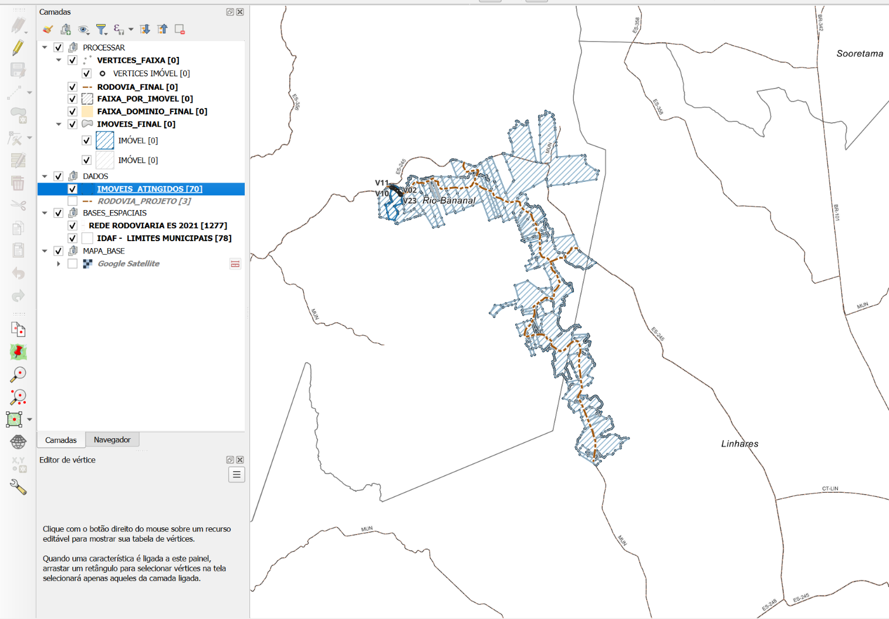
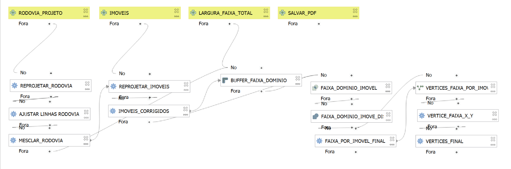
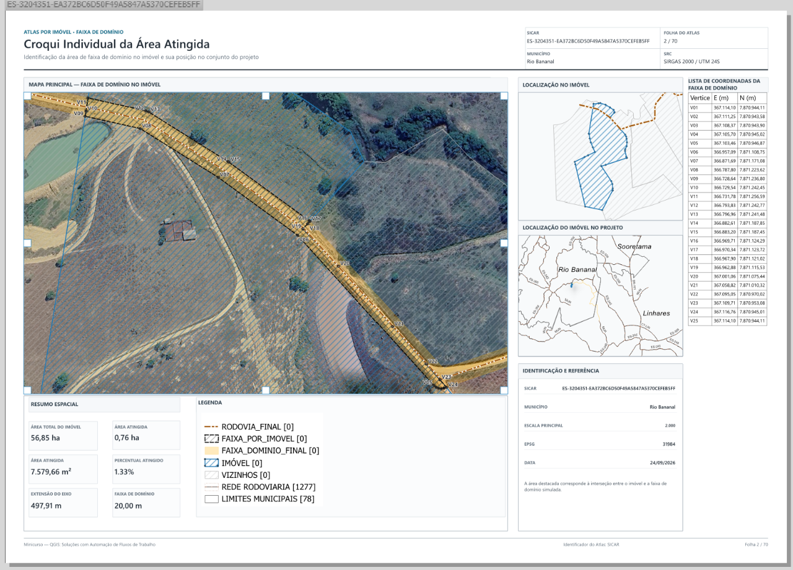

Avance pelos botões ou teclas ← →. O cronômetro fica visível no topo, inclusive no modo apresentação.
Abertura · 01 / 12
QGIS: Soluções com Automação de Fluxos de Trabalho
Do eixo de uma rodovia aos croquis individuais: como transformar operações repetidas em um fluxo reutilizável.
ProcessamentoModeladorExpressõesAtlas
Semana de Ciência e Tecnologia · Ifes Campus Vitória · 24/09/2026
Apresentação · 02 / 12
Quem conduz o minicurso
Otavio Gabrieli Dalvi
Engenheiro agrônomo e fiscal estadual agropecuário no Idaf, com atuação em geoprocessamento, Cadastro Ambiental Rural e automação de rotinas no QGIS.
Formação técnica em Agropecuária, graduação em Agronomia e especialização em Georreferenciamento. Participa do projeto IntegraCAR.
Otavio Gabrieli Dalvi · Idaf
Ambiente · 03 / 12
QGIS: ferramentas e dados no mesmo ambiente
O QGIS é gratuito e de código aberto. Permite visualizar, editar, analisar e apresentar dados geográficos.
A Caixa de Ferramentas de Processamento reúne algoritmos do próprio QGIS e provedores integrados, como GDAL e GRASS. Em geral, a ferramenta usa uma camada e produz outra saída, temporária ou permanente.
O resultado de uma ferramenta pode alimentar a seguinte.

Captura do projeto usado na atividade
O caso · 04 / 12
Três geometrias, um problema
Linha: representa o eixo da rodovia. Polígonos: representam os imóveis e a faixa. Pontos: representam os vértices da faixa por imóvel.
Na simulação, o buffer usa 10 m para cada lado do eixo: a faixa regular tem 20 m no total. O recorte com os imóveis identifica a porção atingida em cada um.
O número 10 é a distância do buffer; 20 m é a largura total pretendida.
Sequência · 05 / 12
O fluxo: uma saída vira a próxima entrada
O trabalho parte de dados, aplica operações espaciais e gera camadas que alimentam o croqui.
Entradaeixo + imóveis
Faixabuffer de 10 m
Por imóvelrecortar + dissolver
Produtovértices + atlas
Quando o traçado muda, as etapas posteriores precisam ser recalculadas.
03 · Imóveis
02 · Faixa de 20 m
01 · Eixo
Motivação · 06 / 12
Por que automatizar?
Executar cada algoritmo manualmente exige repetir escolhas, conferir saídas e gerenciar camadas intermediárias. Uma mudança no eixo pode alterar a faixa, os imóveis atingidos, as áreas, os vértices e os croquis.
Automação transforma retrabalho em reprocessamento.
A primeira execução serve também para compreender e validar o procedimento.
01 Muda o traçado do eixo
02 Recalcula a faixa
03 Atualiza imóveis, áreas e vértices
04 Atualiza os croquis do Atlas
Modelador · 07 / 12
Modelador gráfico: o processo desenhado
O Modelador conecta algoritmos por suas entradas e saídas. Definimos as camadas e parâmetros variáveis, ligamos as operações e executamos tudo como uma rotina.
Na captura, os blocos amarelos recebem as entradas; os demais executam ferramentas. As conexões indicam de onde vem o dado usado por cada etapa.
É o mesmo raciocínio espacial, representado como um fluxo.

Modelo embutido no projeto QGIS da aula
Modelador · 08 / 12
Entrada, parâmetro e resultado
Entrada geográfica: eixo e imóveis. Parâmetro: distância de 10 m aplicada pelo buffer. Saída: faixa, recortes e vértices.
No Modelador, entradas são adicionadas no painel próprio; as ferramentas são buscadas no painel de algoritmos. A saída intermediária pode ficar temporária; as cinco saídas finais são gravadas no GeoPackage.
A Camadas de entrada: linha e polígonos
B Número: 10 m por lado
C Ferramentas ligadas pelas saídas
D Resultados persistentes no GeoPackage
Controle · 09 / 12
Nem todo fluxo é linear
Uma condição pode habilitar etapas apenas quando uma expressão for satisfeita. Alguns algoritmos e processos iterativos não se ajustam diretamente ao Modelador quando o número de saídas não pode ser previsto.
Quando a saída precisa de nome ou destino específico, usamos um parâmetro de saída com expressão, ou complementamos o fluxo com outra solução.
No exercício, destinos finais recebem expressões para gravar tabelas no GeoPackage da pasta do projeto.
? A condição foi atendida?
SIM Executa o próximo algoritmo
NÃO Segue o caminho previsto
↳ Resultados permanentes definidos
Expressões · 10 / 12
Expressões: pequenas regras reutilizáveis
Expressões combinam funções, campos e condições. Calculam atributos e também controlam rótulos, simbologia, ferramentas e itens de layout.
Para localizar um campo em outra camada: array_first(overlay_nearest('Imoveis', "NOME")). Use o nome real da camada e do campo.
Onde usaremos expressões?Em Editar campos, para criar e conservar atributos; no destino das saídas, para gravar no GPKG; e no Layout, para mudar rótulos e tabelas conforme a página do Atlas.
Produto cartográfico · 11 / 12
Atlas: um layout, várias páginas
O Layout organiza mapa, escala, legendas e textos. O Atlas percorre as feições de uma camada de cobertura e gera uma página para cada uma.
Neste exercício, a camada FAIXA_POR_IMOVEL orienta os croquis; rótulos e tabela de vértices acompanham o imóvel da página atual.
Uma regra de layout substitui dezenas de ajustes manuais.

Croqui real do projeto do minicurso
Transição · 12 / 12
Agora, do conceito à prática
Vamos executar as ferramentas, montar o modelo e conferir o Atlas com o projeto fornecido.
Documentação: Modelador · Expressões · Layout e Atlas. Os esquemas são vetores HTML/SVG; imagens são capturas reais e o retrato enviado.
02 · Cenário
Abra os dados
O exercício simula uma ligação alternativa entre Rio Bananal e Linhares. A equipe precisa delimitar a faixa, recortá-la por imóvel e produzir croquis. Se o traçado mudar, o fluxo pode ser executado novamente.
RODOVIA_PROJETOEixo em linhas no DADOS.gpkg.
IMOVEIS_ATINGIDOSPolígonos com cod_imovel e municipio.
20 m no total: a entrada embutida se chama LARGURA_FAIXA_TOTAL, mas é usada como distância do buffer para cada lado. Informe 10 m. Ao reconstruir, você pode renomeá-la como “Distância lateral (m)”.
Extraia juntos os três arquivos do ZIP, abra minicurso_ifes.qgz e confirme EPSG:31984. Trabalhe numa cópia; o ATLAS_FAIXA_DOMINIO.gpkg contém cinco tabelas de saída vazias.
02 · O QGIS por dentro
Como usar o Modelador Gráfico
Abra Processamento → Modelador Gráfico. Na esquerda, Entradas cria os parâmetros pedidos ao executar; Algoritmos permite buscar cada ferramenta pelo nome e inseri-la com duplo clique ou arrastar. No centro, escolha para cada ferramenta a saída da anterior.
Entrada: linha e polígonos↓Reprojetar → Ajustar → Mesclar↓Buffer → Recortar → Dissolver↓Editar campos → Vértices → X/Y
Crie três entradas: “Camada vetorial” limitada a linhas, RODOVIA_PROJETO; “Camada vetorial” limitada a polígonos, IMOVEIS; “Número” decimal, LARGURA_FAIXA_TOTAL, valor padrão 10. A entrada SALVAR_PDF consta no modelo embutido, mas não é usada por nenhum bloco e pode ser omitida na atividade.
Saídas intermediárias: sete blocos passam seu resultado ao próximo sem salvar e sem nome final; no menu de entrada do próximo bloco, aparecem pela descrição personalizada da ferramenta que as gerou. Somente as cinco saídas finais recebem destino em ATLAS_FAIXA_DOMINIO.gpkg. Para elas, no campo OUTPUT, escolha Valor pré-calculado / expressão e copie a URI abaixo. @project_folder aponta para a pasta do projeto salvo.
Escolha Entrada do modelo para dados/parâmetros iniciais; Saída do algoritmo para um bloco anterior; Valor para números/opções fixos. Salve uma cópia .model3 se quiser usar o modelo fora deste projeto.
03 · Atividade principal
As 12 ferramentas do modelo real
Busque cada nome na aba Algoritmos. As descrições em maiúsculas são as existentes no modelo embutido no QGZ. Abra os passos para ver entradas, parâmetros e fórmulas.
Antes de executar: informe 10 na entrada chamada LARGURA_FAIXA_TOTAL. O modelo grava os cinco resultados no GeoPackage da pasta do projeto. Ao reexecutar, confira a substituição das tabelas já existentes e preserve uma cópia do pacote original.
04 · Layout
Um croqui por imóvel
Abra Projeto → Layouts → 02_Atlas_Imovel_Faixa_Dominio_A3. Confirme que a camada de cobertura FAIXA_POR_IMOVEL contém feições. No rótulo do layout, uma expressão dinâmica deve estar entre [% e %]. Na Tabela de atributos do layout, a origem é VERTICES_FAIXA; aplique o filtro que seleciona os vértices da página atual.
Para praticar depois: percentual atingido no Atlas
O rótulo pode comparar a área da feição da cobertura com o imóvel de mesmo cod_imovel na camada IMOVEIS_FINAL. Verifique se o identificador é único.
Cole no rótulo Percentual atingido
[% with_variable('imovel', get_feature('IMOVEIS_FINAL', 'cod_imovel', attribute(@atlas_feature, 'cod_imovel')), CASE WHEN @imovel IS NULL OR area(geometry(@imovel)) = 0 THEN '—' ELSE format_number(100 * area(geometry(@atlas_feature)) / area(geometry(@imovel)), 2, 'pt_BR') || ' %' END) %]
O layout distribuído já mostra 20,00 m de faixa e possui expressões antigas ligadas a IDs internos de camada. Ao alterar as fontes das camadas, confira e substitua os rótulos que deixarem de funcionar. A fórmula do percentual acima usa o nome da camada para facilitar a adaptação.
05 · Controle
Antes de exportar
O modelo deste QGZ usa Recortar e Dissolver; não há blocos “Interseção”, “Extrair por localização” nem “Extrair por expressão”. O script do repositório é uma demonstração simplificada e não reproduz os 12 blocos do modelo.
O HTML funciona sem bibliotecas externas e carrega as imagens da pasta imagens/; o timer e a lista de conferência guardam seu estado apenas no navegador. O modelo está embutido no projeto QGZ; abra-o no Modelador e salve uma cópia .model3 se quiser utilizá-lo fora do projeto.